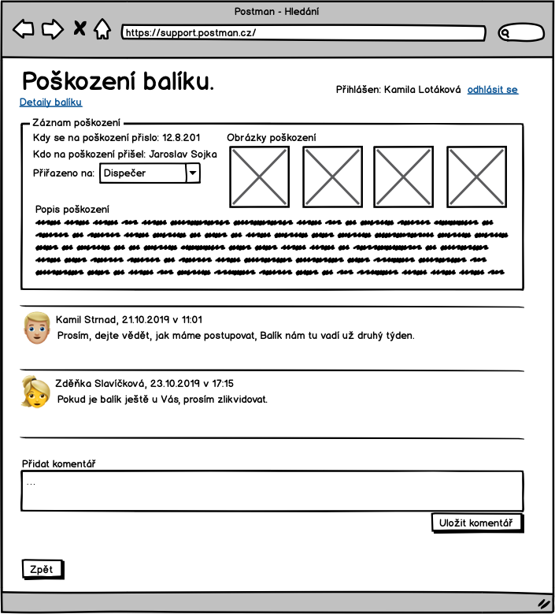
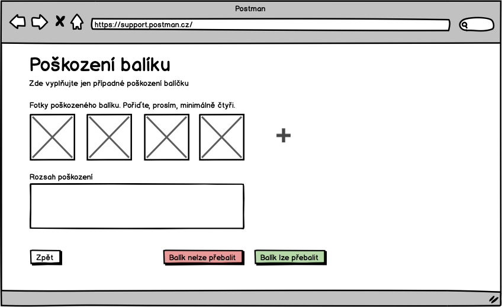

Obrazovky
Zde jsou schematicky popsané obrazovky systému.
S-000 - Info box
V některých případech systém potvrzuje, 쬰 operace dopadla dobře, nebo 쬰 neco není mo쬹칠 udělat a zárověn to nemá povahu validace pole. V těchto a podobných případech budem ukazovat oznámení:

Ve výsledku to m콢쬰 vypadat odlišně.
S-00 - Přihlašovací obrazovka
Přihlašovací obrazovka

Chyba ve formuláři se zobarazí následovně:

S-01 - Základní rozcestník

Sekci "Pracovník podpory" uvidí pouze pracovník podpory, stejně se chová sekce "Dispečer". Detaily toho, kdo co vidí jsou vidět za analýzy.
S-02 - Odhlášení
S-03 - Hledání balíků 📦

Do pole hledat, pujde zadat část libovolné adresy, kód balíku, telefon zákazníka, čast jména, prostě cokoliv.
S-04 - Detail objednávky
Stránku m콢쬰 být rozdělená pomocí zálo쬰k na více. Pokud odkaz na detail balíku není aktivní znamená to, 쬰 balík fyzicky nemáme a ani jsme neměli. Obrazovka obsahuje několik samostatných sekcí:
- Obecné infromace o objednávce
- Platby
- Kontaktní historie
- Události
- Daňové doklady
- Číslo objednávky a variabilní symbol jsou stejné hodnoty.

Detaily záznamů kontaktní historie na této stránce nejsou vidět. Pro ně by měla vzniknout nová stránka s jejich seznamem a zde přibýt odkaz na ní.
Tlačítka zde budou zobrazená podel aktuálních mo쬹ostí. Například tlačítko "Označit za nezaplacenou" nebude vidět ve stavu objednávky Nezaplacená.
S-041 - Potvrzení odpárování platby 💵
Pokud pracovník podpory na obrazovce S-04 detail objednávky stiskne odpárovat, tak se mu zobrazí potvrzovací dialog:

S-045 - Vystavit dobropis 💵

S-046 - Vystavit fakturu 💵
S-047 - Vytvořit záznam do komunikační historie

S-048 - Rozdělení objednávky mezi dvě platby 💵
Validace:
- Pokud bude převáděná část vetší ne celková částka platby, pak se zobrazí: "Nelze převést vy코코칤 částku ne je samotná platba."
- Pokud pracovník nevyplní pole s číslem zakázky pak se zobrazí: "Číslo zakázky je povinné".
- Pokud je vyplněná neexistující zakázka, pak se zobrazí: "Zadaná zakázka neexistuje."
S-05 - Detail balíku 📦
Číslo balíku v nadpisu stránky bude kód balíku. Pokud balík kód balíku namá, pak zde bude kód interního štítku.
Doručovací odresa balíku nemusí být ta, kterou zadal na objednávce zákazník. Pokud doručujeme do dalšího depa, pak zde bude adresa depa. Doručovací adresu, kterou zadal klient lze dohledat na objednávce.

Tlačítka pro fyzickou manipulaci s balíkem jsou dostupná pouze dispečerovi. Jedna se o:
- Přidat záznam o poškození
- Přidat záznam o přebalení
- Přidat měření
- Rozdělit balík
Odkaz na detail je z hledání balíků S-03 a z detailu objednávky S-04.
Část napárované balíky popisuje stav, kdy přijde balík, který se nepodaří spojit s objednávkou, dispečer balík změří a zváží a opatří interním štítkem. Teprve dodatečně se přijde na to, k jaký to byl balík u jaké objednávky.
S-051 - Změna doručovací adresy

M콢쬰 být součástí stránky S-04 Detail objednávky
S-052 - Připojit balík 📦

S-053 - Poškození balíku 📦
Obrázky u osob nejsou nutné. Na nahrávání fotek osob není UC.

S-054 - Chyba při zpracování balíku 📦
Alternativou k předchozí obrazovce je obecná obrazovka pro chybu při zoracování balíku.

S-06 - Přehled plateb

V posledním sloupci bude vidět, jestli je platba spárovaná s objednávkou. Pokud ano, pak zde bude odkaz na detail objednávky.
Checkbox "Zobrazit pouze nespárované" platby umo쬹칤 omezit pohled jen na nespárované.
Pokud je nějaké číslo odchozího účtu zvýrazněné jako odkaz, pak to znamená, ze z toho účtu nám přišlo víc platek a kliknutím na odkaz si lze tyto platby vyfiltrovat - S-08 seznam plateb vyfiltrovaný podle odchozího účtu.
S-07 - Přidání platby

S-08 - Seznam plateb vyfiltrovaný podle odchozího účtu

S-09 - Spárovat platbu s objednávkou

Po potvrzení "Spárovat" nebo "Cancel" se u쬴vatel vrací na stránku v výpisem plateb.
S-10 - Hledání objednávek

Objednávky lze filtrovat podle:
- Textu - bude se hledat v polích:
- adresách
- emailech
- Minimální a maximální ceny objednávky.
- Stavu objednávky - zde půjde hledat pouze nezaplacené objednávky. Ve seznamu stavů bude mo쬹ost hledat objednávky v libovolném stavu.
- Počtu dní, které uplynuli od zalo쬰ní objednávky, kde nepřišla platba. - Pokud nakonec platba přišla, pak se taková objednávka nevyhledá.
- Vybrat objednávky, ke kterým dorazil aspoň jeden balík.
- Vybrat objednávky, ke kterým nedorazil 쮂멳ný balík.
S-011 - Hledání objednávek podle plateb
Obrazovka pro hledání chybových stavů u plateb. Například:
- Objednávek, kde zákazník po zaplacení poslal platbu podruhé.

S-11 - Spárovat objednávku s platbou
Po stisknutí "Spárovat" na S-10 se zobrazí obrazovka:

S-12 - Seznam u쬴vatelů
Odkaz na tuto stránku povede přímo z hlavního rozcestníku S-01.

Poslední u쬴vatel Milan Strnad není aktivní a nebude se moc přihlásit do systému.
S-13 - Přidat u쬴vatele 游놈

S-14 - Upravit u쬴vatele 游놈

S-15 - Nastavit heslo u쬴vatele 游놈
S-200 - Zadání kódu balíku 📦

S-201 - Zadání zpáteční adresy
Stránka slou쮂 pro opsání adresy odesílatele z balíku. Proto쬰 adresa můze být poškozená nebo nemusí být uvedená vůbec, jsou jednotlivá pole nepoviná. Pouze by zde měla být validace na maxímální délku.
S-202 - Kontrola zpáteční adresy
S-203 - Je balík poškozen? 📦

S-204 - Poškození balíku 📦

S-205 - Tisk interního štítku 🖨 🏷
S-206 - Zadání spotřeby obalového materiálu
S-207 - Měření a v치쬰ní 丘뒲잺

Všechna pole jsou povinná a musí obsahovat číselné hodnoty.
S-208 - Fronta kam má být balík vlo쬰n 📦

S-209 - Načtení interního štítku 🏷
Stránka pro načítání interního štítku se načte tak, ze focus je v poli pro kód interního štítku. To umo쬹칤 dispečerovi čtečkou načít čárový kód bez dalšího klikání. Stejně tak by stránka měla poznat, 쬰 kód byl načten a přejít na další stránku bez potvrzování tlačítkem "pokračovat".
Na stránce by měla být validace, 쬰 kód interního štítku existuje a balík je ve správném stavu. To co je správný stav zavisí na pou쬴tém UC.
S-210 - Co dál s chybovým balíkem 📦

S-211 - Načtení interního štítku 2 🏷
Stejná stránka jako je S-209 s tím, 쬰 na obrazovce je mo쬹ost zadat, 쬰 balík nemá interní štítek.

S-212 - Tisk štítku dopravce 🖨 🏷
Zároveň se zobrazením této obrazovky se vytiskne štítek dopravce.